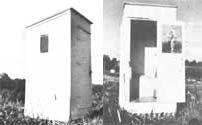

The other day, as I thumbed through an agricultural weekly, I came upon a lament for the demise of the old homestead privy. As a day-to-day outhouse user, I don't have any affectionate feelings about our outdoor commode. But I'm accustomed to it, I guess ... and I sure don't find it the inconvenience that some of our more citified friends seem to.
I have to admit, however, that my initial reaction-when we moved to our country home two winters ago-was not so tolerant. The former tenants had left their privy (which had served a family of seven) uphill from the house and only 28 feet from the well.
We suffered through that first freezing winter, tried not to think about runoff into the water supply, and poked the rising "unmentionable" stalagmite down with a two-by-four every day or so.
As it happened, no one developed gastroenteritis or anything ... so come May we cleaned out the old pit and moved the outhouse 60 feet (and over a hill) from the well. Relief at last.
To make the relocated facility more aesthetic, I gave it a coat of white paint (inside and out) and hung a small art exhibit on the walls for the edification of visitors. (Though we have one neighbor who decorated his privy with erotic pictures and French postcards, my tastes run more to the conservative.) The bright paint (and the artwork) seemed enough for internal decoration ... while the summer wildflowers handled that chore outside with no assistance from me at all.
Though these embellishments do much to help cheer us (and our guests) during periods of enforced inactivity in the outhouse ... the most important factor in making a privy acceptable is cleanliness.
We empty and bury the contents of the drop drawer regularly and-before returning it to service-line the container with a few inches of clean soil or sawdust ... to make the next dumping easier. In the cold months (here in Nova
Scotia we have a stretch when everything freezes) there are long periods when emptying the drawer is impossible. An occasional dose of septic tank stimulant (we use Septobac) melts the pile down some ... but that first spring unloading is still a real job.
I also keep a bucket of wood ashes and an empty quart can by the seat so that we can "flush" our latrine with a sprinkle of ashes after each use. This keeps the odors away, and-when ashes are scarce-we mix 'em with sawdust to stretch out the supply.
Regular sweepings and wash-downs control cobwebs and grime inside our outhouse ... while bunches of aromatic herbs and a scented candle or two add a lot to the atmosphere.
It always surprises me when we visit people whose houses are worlds tidler than mine, but whose privies are actually offensive. I feel that the outhouse, as a potentially "dirty" place, deserves a little extra housecleaning. My husband calls me "outhouse proud", but he only means that he'd like to see the kitchen less cluttered ... not that he thinks the privy should be messier.
Someday, I expect, the miracles of modern plumbing (or maybe a more modern composting toilet) will come to our house. Will we burn down that "little house" then? Nope. It has lots of advantages in terms of privacy, it's closer to the barn and woods than "Indoors" is, and-since it has no moving parts or pipes-will provide a foolproof backup system for those days when the water lines freeze, leak, or just stop working.
I have to admit, though, that I'll welcome indoor facilities on occasion ... especially in January when the outhouse is a chilling place despite our cold-weather styrofoam seat.
And even though our privy is practical-and pleasant enough after its "sprucing up"-I'd never write a glowing, nostalgic piece about that little house on the hill. Some subjects just aren't fit for eulogy.
|
 |
|
|